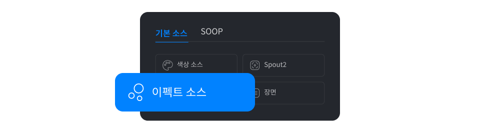
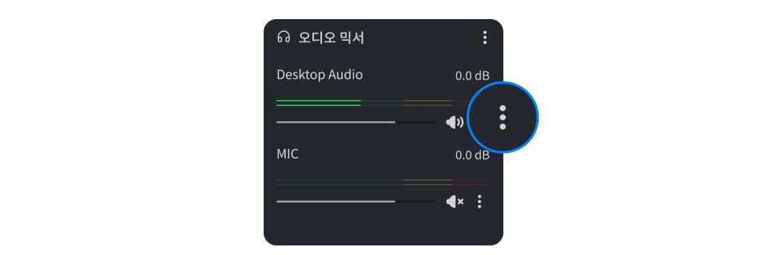
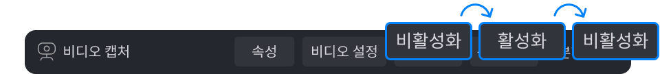
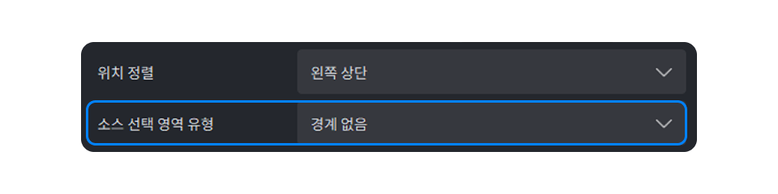

기존 프릭샷의 게임 캡처 소스가 보이지 않아요.
가끔 게임 캡처 소스를 추가해도 화면에 나오지 않을 수 있습니다.
이럴 때는 프릭샷 플러스를 종료한 후, 마우스 우클릭하여
관리자 권한으로 실행해 주세요.
파티클이 안 가져와져요.
캠효과 내에 있는 파티클은 기존 설정이 자동으로 넘어오지 않습니다.
효과를 사용하려면 장면 소스 리스트에서 소스 추가 선택 후
이펙트 소스를 새로 추가해 주세요.

오디오 설정(증폭, 소음 억제 등)은 어떻게 하나요?
기존 프릭샷의 오디오 효과는 프릭샷 플러스에서 오디오 필터로 설정할 수 있습니다.
오디오 믹서 > 더보기(⋮) > 필터에서 원하는 필터를 추가해 보세요.

캠 화면이 나오지 않아요.
먼저 다른 장면에서 캠을 사용 중인지 확인하세요.
모든 장면에서 나오지 않는다면,
소스 선택 후 중앙의 소스 도구모음에서 비활성화를 클릭하세요.
버튼이 활성화로 바뀌면 다시 선택해 주세요.

캠 소스를 옮겼는데 분할이 사라졌어요.
캠 1개당 분할은 1개만 적용됩니다. 같은 캠 소스를 복제해 각각 다른 분할을 적용
하더라도, 실제로는 분할이 적용되지 않고 원본 그대로 표시됩니다.
따라서 2개 이상 캠 분할을 사용하는 경우, 크롭 기능을 사용하여 분할해 주세요.
1. 캠 소스를 우클릭한 후 배치(위치/크기) > 배치(위치>크기) 편집을 선택하세요.
2. [소스 선택 영역 유형]을 ‘경계 없음'으로 설정해 주세요.
3. 소스 바깥 라인을 alt키를 눌러 원하는 만큼 크롭해주세요.
4. 크롭한 소스를 복사해서 사용해주세요.

장면 소스 불러오기 시 미지원 소스 안내
현재 NDI 소스는 지원되지 않습니다.
추후 업데이트를 통해 지원할 예정이니 방송 설정 시 참고 부탁드립니다.